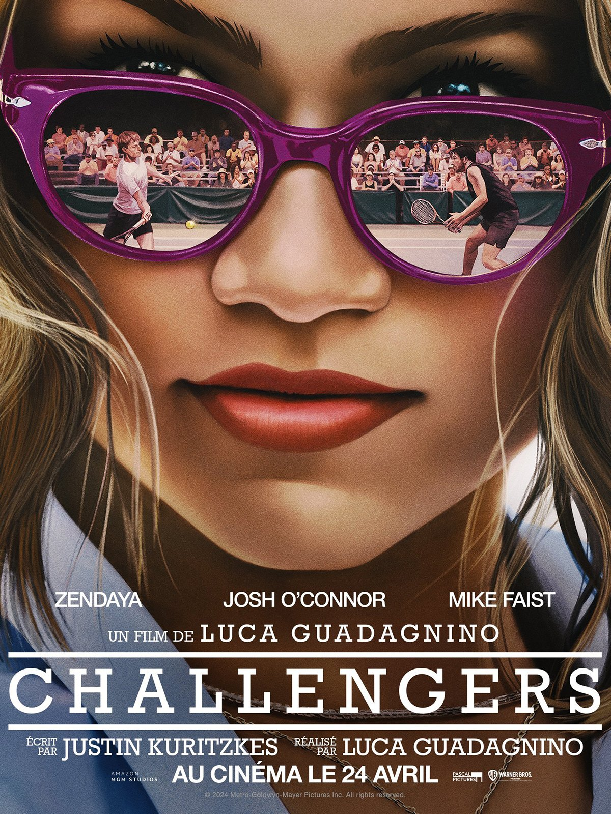
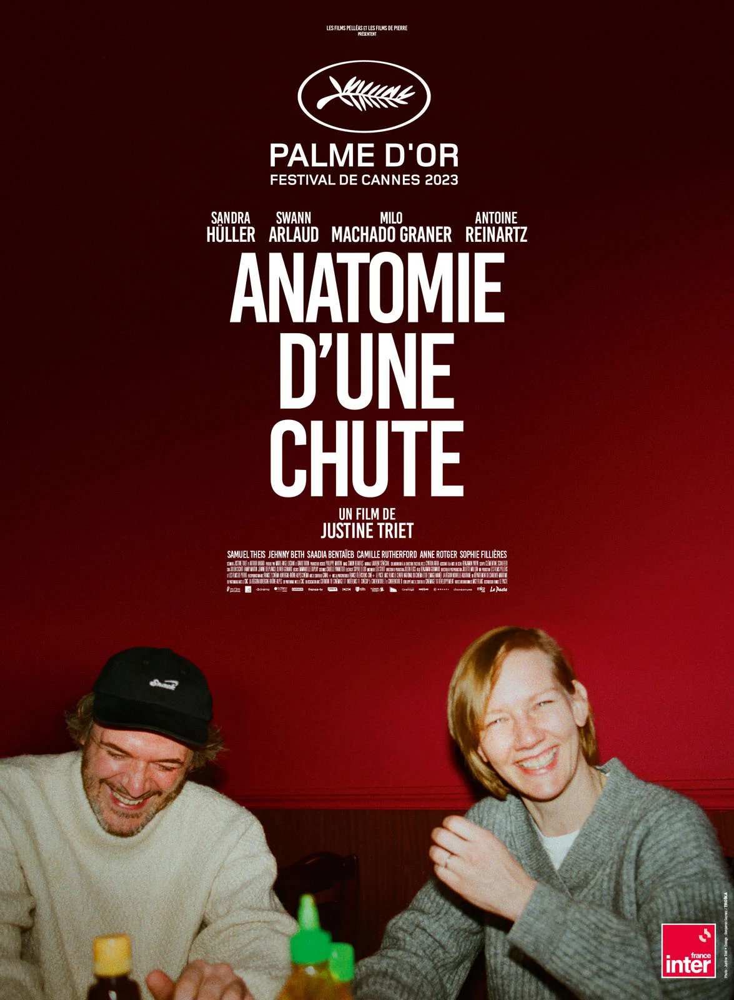

The Fall Guy ou Le cascadeur au Québec est un film américain réalisé par David Leitch et sorti en 2024. Il s'agit d'une adaptation de la série télévisée L'Homme qui tombe à pic (The Fall Guy) créée par Glen A. Larson et diffusée entre 1981 et 1986. Ryan Gosling y reprend le rôle tenu par Lee Majors dans la série. Le cascadeur Colt Seavers est la doublure habituelle du célèbre acteur Tom Ryder. Après un grave accident lors d'un précédent tournage, il se retrouve engagé sur le film Metalstorm réalisé par Jody Moreno, ancienne petite-amie de Colt. Lorsque la star disparaît mystérieusement et que le projet est menacé, Colt se porte volontaire pour enquêter sur la disparition et trouver l'acteur disparu et ainsi sauver le premier long métrage de Jody. Colt va pouvoir compter sur l'aide de son meilleur ami et désormais coordinateur des cascades, Dan Tucker.
Tashi Duncan, une joueuse de tennis devenue entraîneuse, décide de se consacrer à la carrière de son mari, Art Donaldson, le faisant passer d'un joueur médiocre en un champion du Grand Chelem de renommée mondiale. Pour le sortir d'une récente série de défaites, elle le fait participer à un tournoi « Challenger » où il se retrouve face à Patrick, son ancien meilleur ami et l'ancien petit-ami de Tashi1.
Anatomie d'une chute est un drame français co-écrit et réalisé par Justine Triet, sorti en 2023. Le film est présenté pour la première fois dans le cadre de la « compétition officielle » du Festival de Cannes 2023, et obtient la Palme d'or — Justine Triet devenant la troisième femme à remporter cette prestigieuse récompense. Le film obtient par la suite de nombreuses récompenses et nominations. En janvier 2024, il devient le premier film français à remporter le Golden Globe du meilleur scénario et décroche aussi celui du meilleur film en langue étrangère. Le film est nommé à cinq reprises aux Oscars 2024, notamment comme meilleur film (ce qui en fait le dixième long métrage français de l'histoire en lice pour ce prix1) et meilleur réalisateur ; il remporte le 10 mars 2024 celui du meilleur scénario original. En France, le film est nommé onze fois aux César 2024 et en remporte six ; dont ceux du meilleur film, meilleure réalisation, meilleure actrice et meilleur scénario original2.